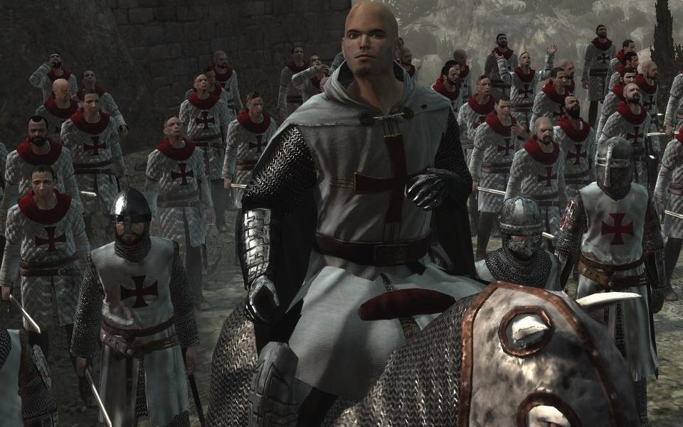

Assassin's Creed
Historia de los templarios
En Assassin’s Creed, los Templarios son una organización secreta que busca imponer el orden y el control sobre la humanidad, en contraste con los Asesinos, que defienden la libertad individual.
los Templarios han existido desde tiempos antiguos bajo diferentes nombres, evolucionando hasta convertirse en una organización global que opera en las sombras.
Historia y proposito
- Origenes: En la saga, los Templarios evolucionaron en la Orden de los Antiguos, una organizacion que existia desde los tiempos remotos
- Objetivo: Creen que la humanidad necesita ser guiada por una elite iluminada para evitar el caos
- Fragmentos del Edén: Buscan estos artefactos creados por los ISU, una civilizacion avanzada. Los templarios los buscaban para controlar la mente humana y establecer su vision de paz
Conflicto con los Asesinos

- La lucha entre Asesinos y templarios ha durado siglos, desde la época de Altaïr hasta la era moderna.
- Mientras los Asesinos creen en el libre albedrío, los Templarios ven la libertad como un obstaculo para la estabilidad.
Los Templarios creen que el control es esencial para la estabilidad, mientras que los Asesinos defienden la libertad como el camino hacia el verdadero progreso.
| Aspecto | Templarios | Asesinos |
|---|---|---|
| Objetivo Principal |
Imponer orden y control para la paz |
Defender el libre albedrío y la libertad |
| Filosofia | "La paz se logra con el dominio" |
"Nada es verdad, todo está permitido" |
| Metodo | Usar poder político y tecnologia |
Operar desde las sombras con sigilo |
| Uso de artefactos |
Manipular la humanidad con los fragmentos del Edén |
Proteger los artefactos y evitar su abuso |
| Organización moderna |
Abstergo Industries |
Hermandad oculta de los asesinos |
| Liderazgo | Jerarquía estricta con un Gran Maestre |
Estructura descentralizada sin lideres absolutos |